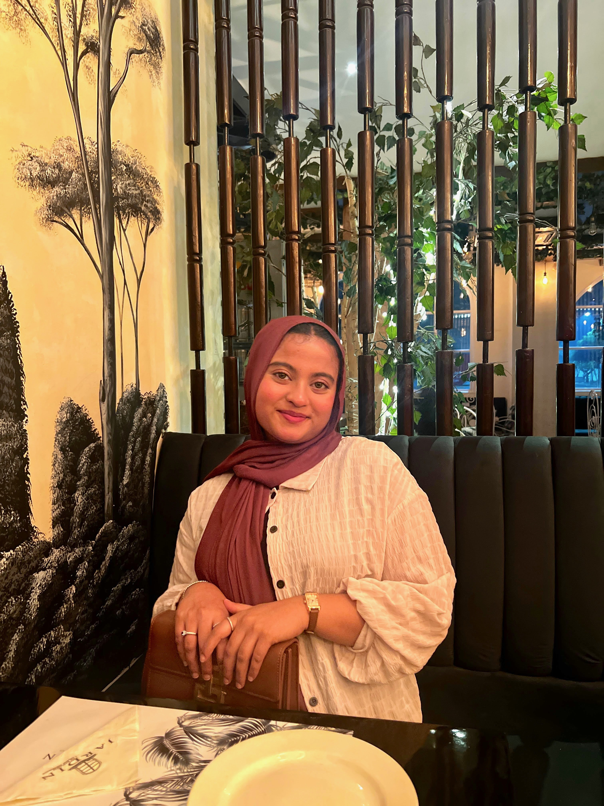
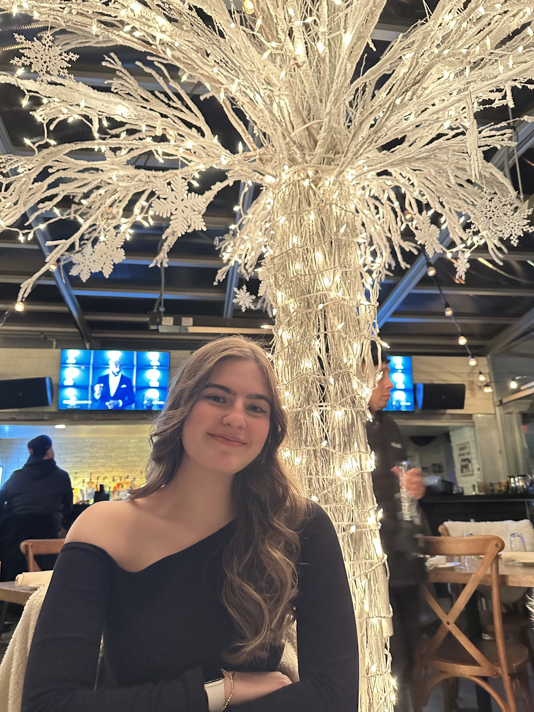
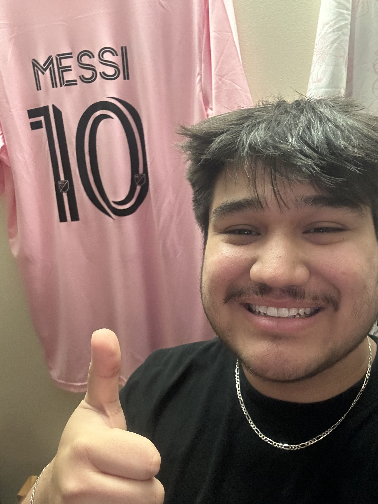
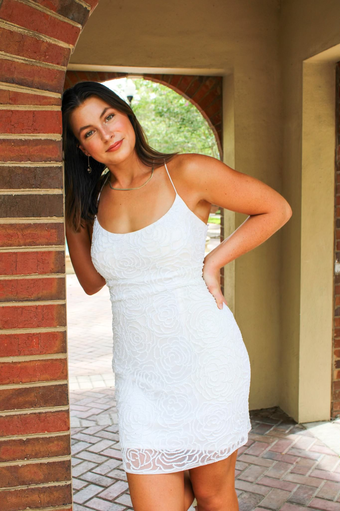
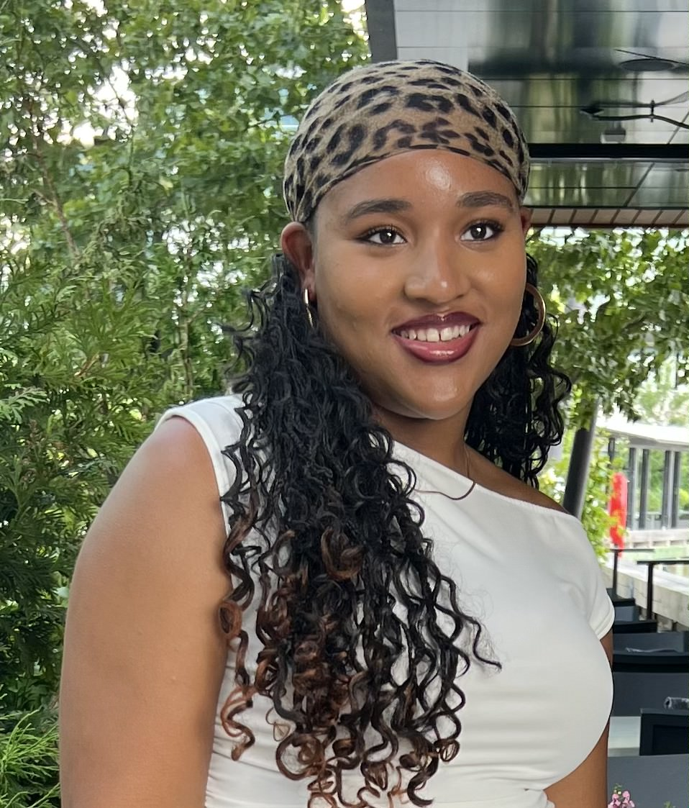
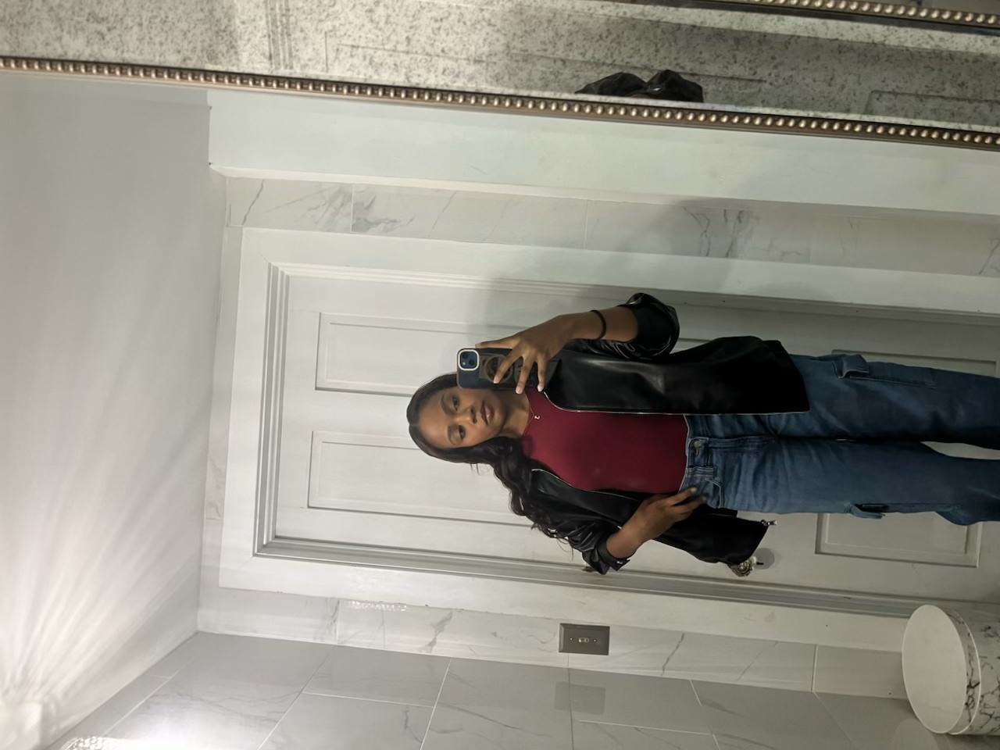
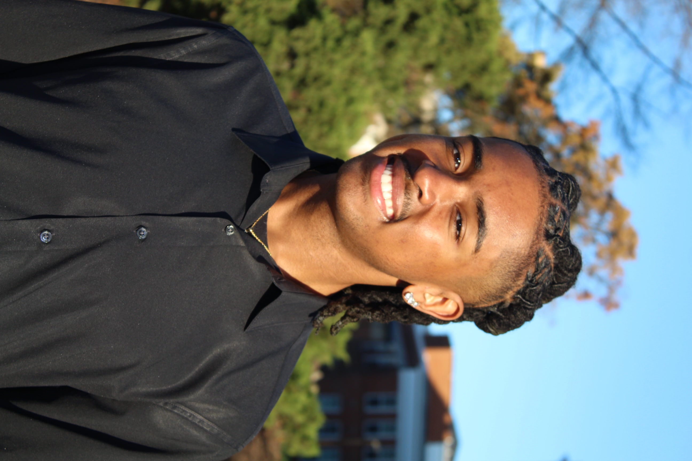
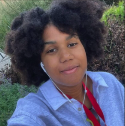
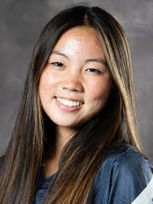

Team AALERT-P
Team Members
A diverse group of researchers committed to advancing PCOS detection

Abiha Rizvi
Team Liaison and
Ombudsperson
Hi, my name is Abiha Rizvi, and I am an intended Biology major in
cohort 2027. I initially proposed this topic to address a knowledge
gap in the field, focusing on the reproductive health of
underrepresented groups, particularly women of color and those
from low socioeconomic backgrounds. I am mainly interested in
exploring the 'why' behind the lack of a cure for PCOS. I hope you
find our project intriguing and valuable.

Daphne Saatcioglu
Team Liaison
I'm a Sophomore majoring in Neuroscience. It's fascinating that we have the
chance to explore a disease that remains largely unknown. This is an incredible
opportunity to contribute to women's health and uncover potential causes of
PCOS. I'm eager to dive into this topic and support the search for a possible
cure.

Erik Vasquez
Web Liaison
I am a sophomore majoring in Computer Science on the
Cybersecurity Track. I really love all of the aspects of our research
but what really interest me is the security of our patients medical
records. I think the peace of mind of knowing all of our information
is secure is something I love working on and something I want to
bring to our project!

Laura Akkurt
Mentor Liaison
I am a sophomore majoring in Biological Sciences We explore
genetics and have the opportunity to develop something new
whether it's a biomarker or software. The position interests me
because I am excited to organize sources of information and
compile what we research as a team.

Maddie Odom
Team Clerk
I'm a sophomore criminology and criminal justice major, planning on adding
computer science as a double major. I was very interested in Team AALERT-P
because I'm very passionate about spreading awareness about PCOS and am
excited to try to design an app.

Mackenzie Clopton
Ombudsperson
I am a sophomore civil engineering major.
I was interested in Team AALERT-P
because PCOS effects a large number of
individuals in the world some of which I
am close with and I wanted to further the
research being done, possibly find a
solution for PCOS patients, and spread
awareness about PCOS.

Nidhi Anne
Library Liaison
I am a sophomore bioengineering major. I was interested in team
AALERT-P because I would like to spread awareness about PCOS
and gain additional biomedical research experience. I am very
excited to start work over the next couple of years!

Toi Lyles
Financial Liaison
I'm a sophomore dance and pre med student! I am interested in Team AALERT-P
because PCOS isn't really talked about especially as a black student and
I believe more awareness should be available to help women work through
PCOS and find hope through our research!

Walter Brown
Social Media Liaison
Hi everyone, I'm Walter (He/They),
I'm currently studying general biology on the pre-med track in hopes of becoming a cardio-thoracic surgeon.
I'm involved a number of organizations on campus, and I worked as a certified medical assistant! I'm also a plant parent! With this team,
I have served as the social media liaison, brainstorming ideas + ways to communicate our equitable mission in a media-friendly manner!
Support Team
Dedicated mentors and support staff who guide our research
Dr. Eric Haag
Research Mentor
Biological Sciences
Research mentor guiding the team's scientific approach and providing
expertise in biological sciences to support the PCOS research project.
Brynne Norton
Research Librarian
Information specialist supporting the team's research efforts
by providing critical resources, research guidance, and academic
support throughout the project.
Former Team Members
Acknowledging the valuable contributions of our past researchers

Sophia Jones
Former Team Liason
Former team liaison who contributed to the early stages
of the PCOS research project and helped establish the
team's initial research framework.

Minjee Yi
Former Social Media Liason
Previous social media liaison who helped raise awareness
about the project and PCOS through digital platforms.
Collaborate With Us
Interested in our research or potential collaboration?